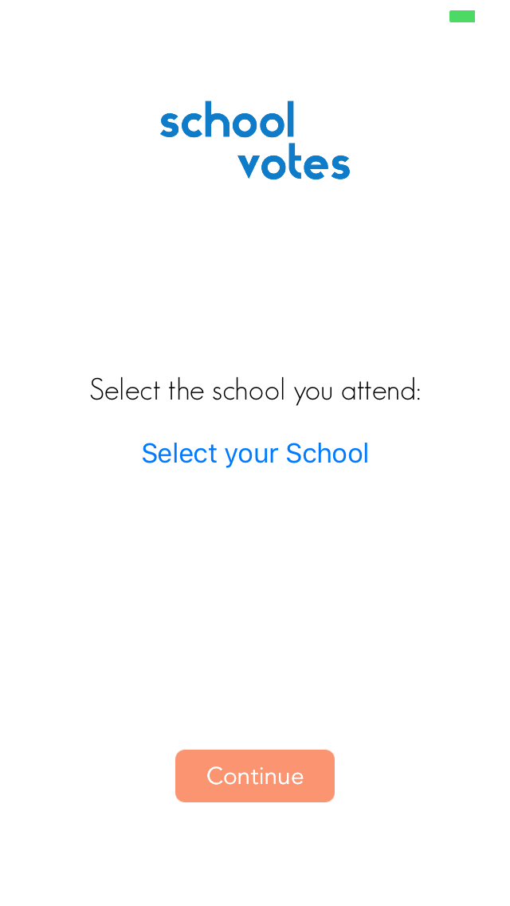

My first app is called "Emoji Memory." It is a memory game where the user must remember the order of cards. Each card is represented with an emoji on the other side. The user taps to reveal the emoji and must match all the cards to win. Currently, the best score is 16.
This is the first screen that appears. It allows the user to customize the emojis he/she wants to use in the game. Or, they can simply select the "Continue with Random Emojis" and play the game with random emojis
The user can select each box to type in the emoji of their choice. The user, however, cannot repeat the same emoji nor leave a box blank; if they try, a warning will appear and they will not be able to continue until they fix the problem.
After pressing the "Continue" button, the user sees a board of 12 squares. They can unflip them to reveal the emoji under the card. If they select two cards that aren't of the same emoji, the board will reset. The cards will stay, however, if the emojis are the same.
Once the user has completed the game, an alert will appear congratulating them.
If the user got their best score, the best score text will update with the new score.
If the user wishes the play again, he/she can click the "Play Again" button and the board will reset. If the user wants to change the emojis, however, they can click the "Back to Emoji Selection" button at the top left corner of the screen.
The second app is called "School Votes." This app is a voting app that will be used my the students at my high school, Santa Monica High School in the fall. Students can vote on decisions posted by ASB. Students can also see the statistics of the votes.
This is the login screen. After a user signs up, they will no longer need to sign in.
After clicking on the "Select your School" Button, the user has a selection of schools to choose. After picking one, the logo appears.
Once the user clicks on the "Continue" Button, the user can see the list of questions he/she can vote for.
After clicking on one of the questions, the user can choose which response they choose to give.
Once the user has clicked on the "Cast Vote" button, the vote they chose and the number of people who voted for the same response will appear. This is here only for testing purposes; the final version will remove the question from the feed.
Clicking on the Play Button (subject to change) allows the user to see the statistics of the votes. They will see the exact number of people who voted for response as well as a progess bar to further demonstrate what the result will most likely be.